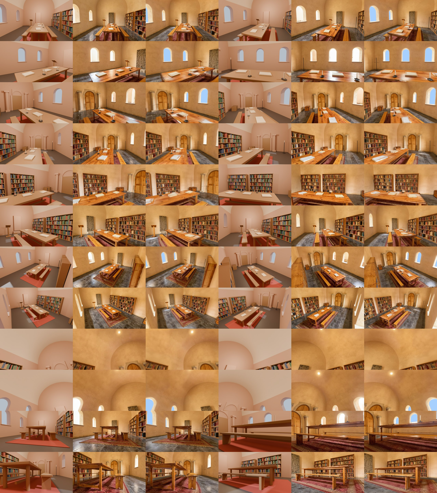
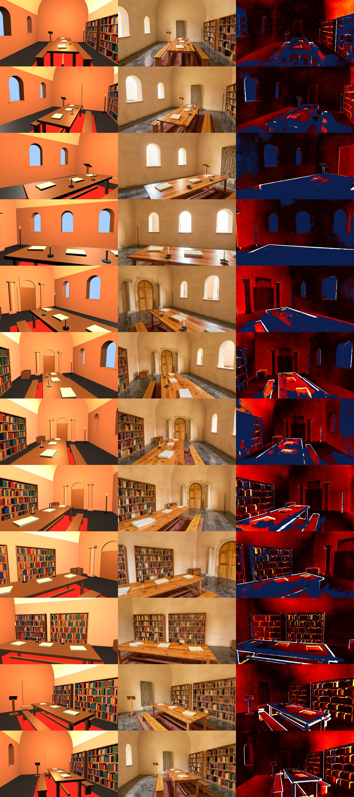
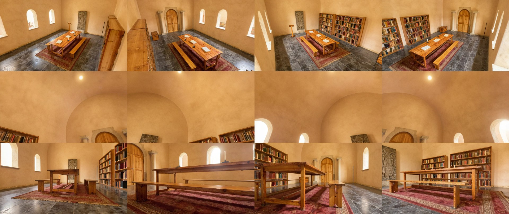
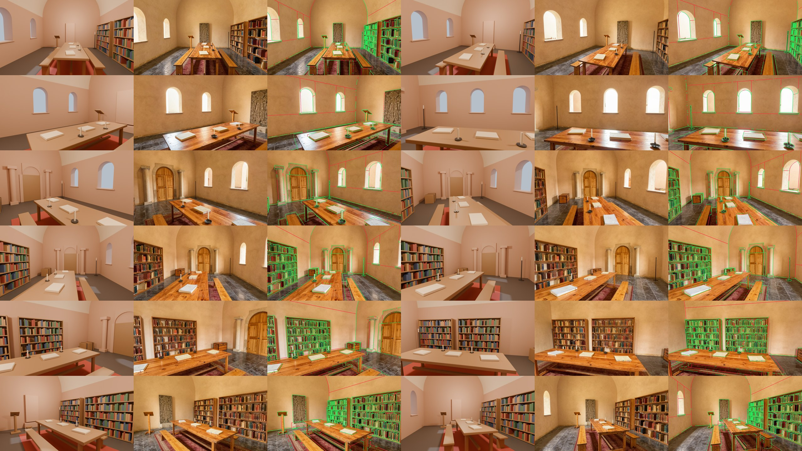

Atlas Bridge v2: Blender builds the world, Atlas paints it, Blender checks the paint
A scriptorium is modelled in Blender, exported as X3D by the Blenderizer add-on and sent to World Labs Atlas as cameras and Cycles depth. Atlas returns pictures, Gaussian splats, a mesh and collider boxes. Then Blender does five jobs on what came back: it supplies the input, cleans the result, matches colour, judges the pictures against Cycles, and drops balls on the colliders. Every number below names its receipt.
Live · drawn by the X3D to three.js bridgeWalk the room: Atlas paint on exact Blender geometry
World
loading
Loading the bridge
Layers
Viewpoints
Drag to look, W A S D or the arrow keys to move, Q E down and up, wheel to step. The default world is one valid X3D 4.0 file with one texture: no splats, no generated mesh. Switch to the Atlas return world to see the splats, the Atlas mesh and the collider boxes over the same room. Grey or flat patches in the clean world are surfaces no Atlas view saw; they keep their Blender colour.
The loopBlender, X3D, Atlas, and back

Each pair of rows is 12 cameras in threes: the Cycles render of the Blender scene, the picture Atlas painted from that camera's depth, and the clean X3D (Atlas paint baked onto the Blender geometry) drawn live by the bridge from the same Viewpoint. The second ring looks down from the corners, up into the vault, and along the floor.
Five roles for BlenderWhat each one measured
Role 1 and 4 · picturesDepth out, paint back, and the judge

First ring. Atlas pictures with the error of Atlas's returned depth against the Cycles depth that was sent.

Second ring, generated with the first ring as context: corners looking down, the vault, and under the table.

Cycles as judge. Object outlines from the Cycles object-index pass, marked by whether the Atlas picture has an edge there.
Role 2 · what came backSplats, mesh and colliders against the Blender surface
Role 3 · colourOne compositor node, fitted on shared surface points
Because the geometry is known, the same surface point can be found in two pictures. Pairs from the even first-ring views fit the transform; pairs from the odd views score it. The last column checks Blender's Color Balance node (Offset/Power/Slope) against the numpy fit.
Role 5 · physicsBalls dropped on the Atlas colliders, against the same drop in the X3D room
LedgerWhat the credits bought
Rights and credit. Pictures, splats, the mesh and the collider boxes on this page were generated by World Labs Atlas with the owner's developer account. They are shown with credit, for personal, non-commercial use, and are not covered by this repository's licence. The Blender scene, the X3D files exported from it and the code are the author's. Details: DATA-ATTRIBUTION.md. Takedown: if you hold rights in anything here and want it changed or removed, open an issue at github.com/hagopjay/x3d.demo/issues and it comes down at once while the question is looked at.